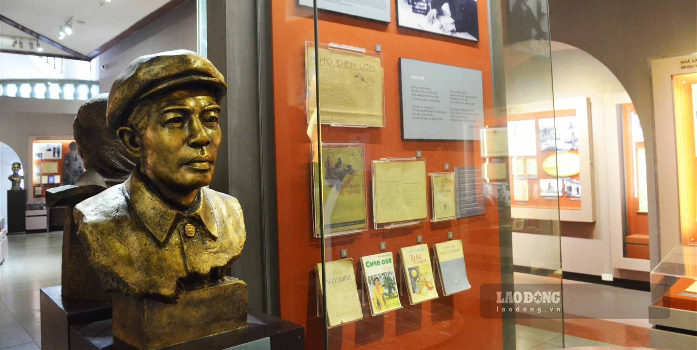
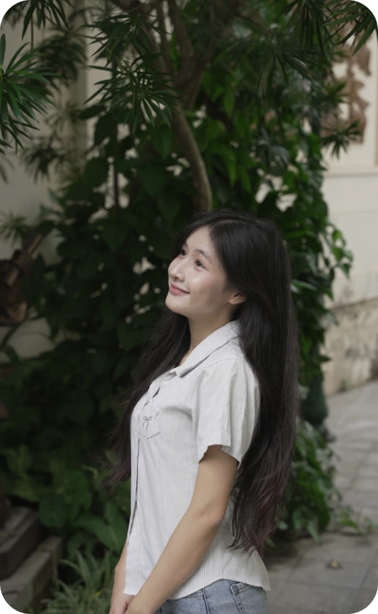
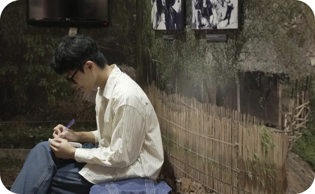
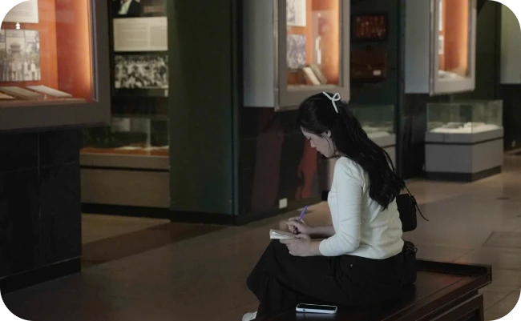
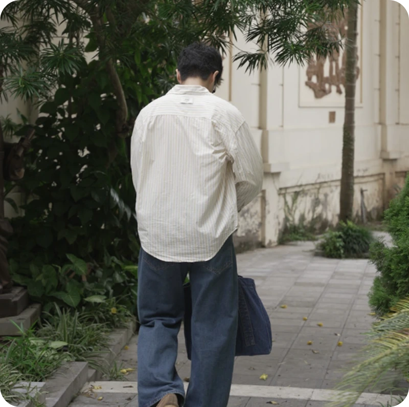
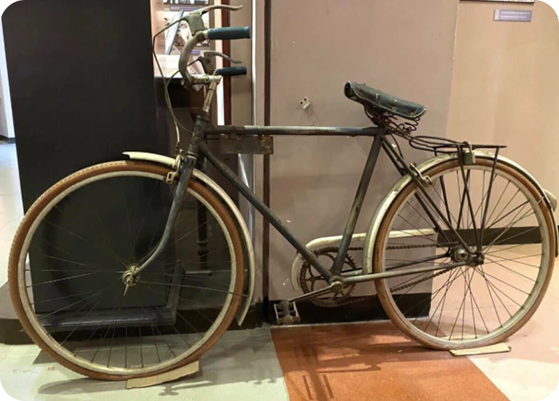
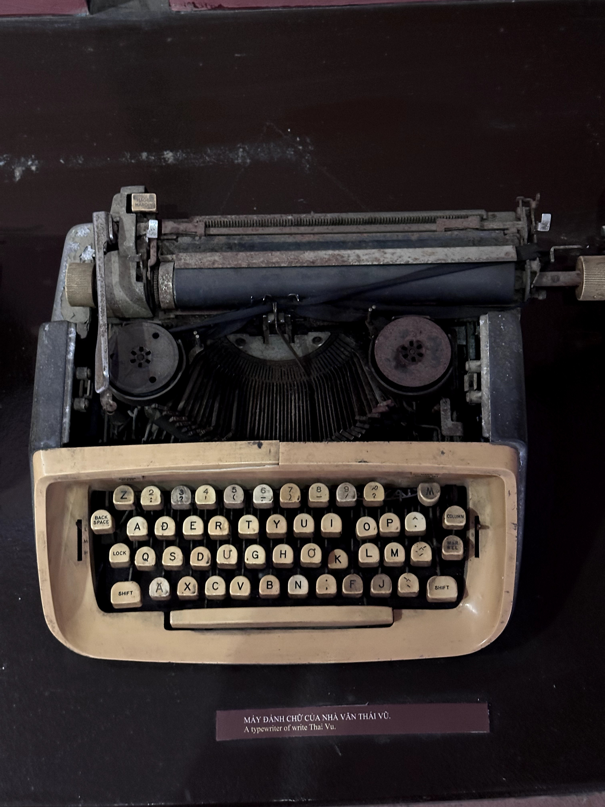
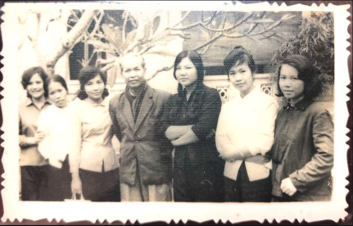
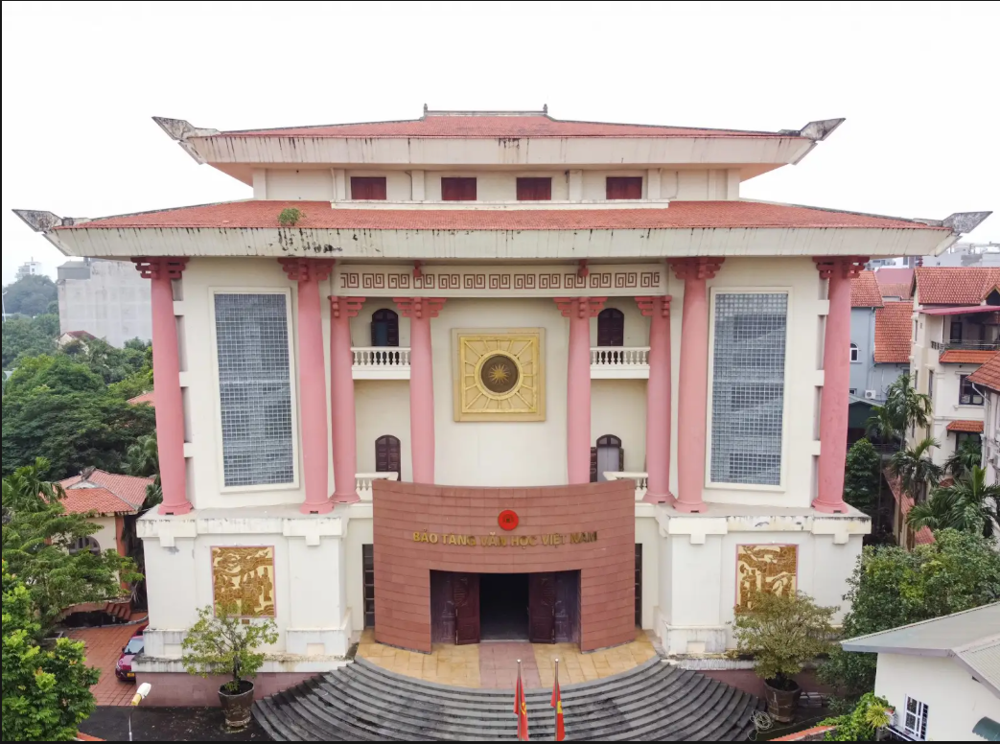

BẢO TÀNG VĂN HỌC VIỆT NAM
Văn Chương
Ký Ức
Việt Nam
GIỚI THIỆU
Lời giới thiệu
Bảo tàng Văn học Việt Nam hứa hẹn là một địa điểm văn hóa vô cùng hấp dẫn bởi nơi đây đang lưu giữ rất nhiều hiện vật quý gắn liền với các nhà văn và nền văn học Việt Nam từ thời kỳ cổ trung đại cho tới nay


Bảo tàng Văn học Việt Nam tọa lạc tại địa chỉ 275 Âu Cơ, phường Quảng An, quận Tây Hồ, TP Hà Nội. Cách trung tâm Hà Nội 6,2 km về phía Bắc. Mảnh đất này vào những năm 60-70 của thế kỷ trước là Trường Viết văn Quảng Bá của Hội Nhà văn Việt Nam. Nơi đây đã lưu lại nhiều kỉ niệm của các nhà văn, nhà thơ nổi tiếng.
BẢO TÀNG VĂN HỌC VIỆT NAM
Là một trong số rất ít các Bảo tàng về văn học trong khu vực cũng như trên thế giới đóng vai trò quan trọng trong việc nghiên cứu, sưu tầm, bảo quản, trưng bày, giáo dục về nền văn học của dân tộc.

THAM QUAN

Đăng ký tham quan
BẢO TÀNG VĂN HỌC VIỆT NAM
THỜI GIAN MỞ CỬA:
Sáng: Từ 8h00 - 12h00.
Chiều: Từ 13h30 - 17h00.
Ngày hoạt động: Từ thứ Hai đến thứ Sáu.
VÉ VÀ LỆ PHÍ:
Người lớn: 40.000 VNĐ
Học sinh cấp 3, sinh viên (có thẻ): 30.000 VNĐ
Học sinh cấp 1 - cấp 2: 20.000 VNĐ
ĐỊA CHỈ:
275 đường Âu Cơ, phường Tây Hồ, Hà Nội
Xem thêm
Sáng: Từ 8h00 - 12h00.
Chiều: Từ 13h30 - 17h00.
Ngày hoạt động: Từ thứ Hai đến thứ Sáu.
VÉ VÀ LỆ PHÍ:
Người lớn: 40.000 VNĐ
Học sinh cấp 3, sinh viên (có thẻ): 30.000 VNĐ
Học sinh cấp 1 - cấp 2: 20.000 VNĐ
ĐỊA CHỈ:
275 đường Âu Cơ, phường Tây Hồ, Hà Nội
KHÁM PHÁ

Đi bảo tàng nghe gì?

Solo date tại
bảo tàng “lowkey”

Một ngày sống chậm ở không gian văn học

3 outfit đi bảo tàng cực “ăn ảnh”
Xem thêmSƯU TẦM
SƯU TẦM
TƯỢNG NHÀ VĂN

XE ĐẠP CỦA
NHÀ THƠ TÚ MỠ

MÁY ĐÁNH CHỮ
CỦA NHÀ VĂN THÁI VŨ
CHUYỆN BẢO TÀNG
CHUYỆN
BẢO TÀNG
Lắng nghe những
câu chuyện văn học


Hành trình đi tìm một “ngôi nhà” cho văn chương Việt
Văn chương Việt không chỉ tồn tại trên những trang sách. Đó còn là ký ức, con người và những dấu mốc làm nên diện mạo văn học qua nhiều thế hệ.
Từ Trường viết văn Quảng Bá đến Bảo tàng Văn học Việt Nam
Hành trình từ Trường viết văn Quảng Bá đến bảo tàng là câu chuyện về sự tiếp nối của những thế hệ cầm bút, những tác phẩm và ký ức văn chương qua thời gian.